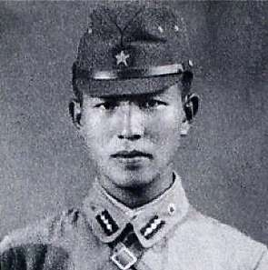
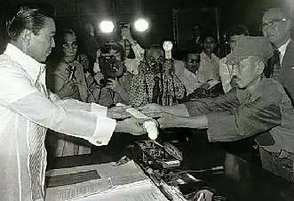

Борис Акунин
Мой календарь
В детстве я любил сказку про стойкого оловянного солдатика. Только очень расстраивался, что солдатик расплавился.
Вот вам история про солдатика, который не расплавился.
Это Хироо Онода, родившийся 19 марта 1922 года, младший лейтенант императорской армии. Он был коммандо, отправленный во вражеский тыл с приказом наносить ущерб неприятелю и не сдаваться в плен ни при каких условиях.
В филиппинских джунглях Онода партизанил с декабря 1944 года. В августе 1945 года Япония капитулировала. Но лейтенант счел это сообщение вражеской пропагандой и продолжил войну. С ним было трое солдат. Их одного за другим убили.
Онода пропартизанил против бедных, ни в чем не виноватых Филиппин 28 (двадцать восемь) лет. Стал живой легендой, о чем совершенно не догадывался.
В конце концов другой японец, почти такой же чокнутый, специально прилетел искать легендарного диверсанта, каким-то чудом обнаружил его (японцы упорные) и спросил: «А что нужно, чтобы ты перестал воевать?». Онода ответил: «Чтобы командир, давший мне приказ, отменил его».
Слава богу, бывший начальник оловянного солдатика был еще жив, он теперь мирно торговал книгами. Дедушка прибыл в филиппинские джунгли, надел военную форму и отменил приказ. Только тогда Онода сложил оружие. Филиппинцы даже не стали привлекать его к уголовной ответственности за многолетнее хулиганство - из уважения.
Ветеран прожил потом еще сорок лет. Переехал в Бразилию, женился, написал мемуары.
Сегодня - за стойкость! (Хотя, конечно, лучше проявлять ее в каком-нибудь полезном деле).